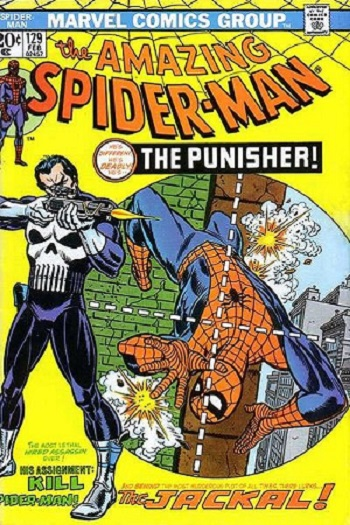
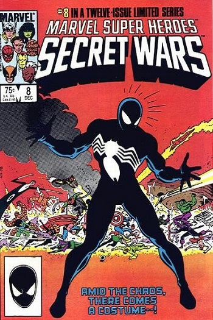
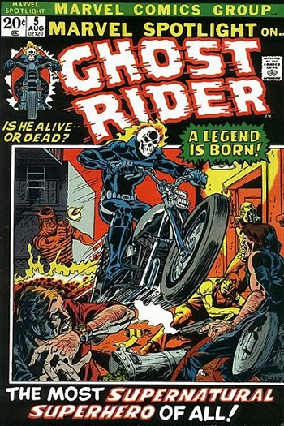

Bronze Age
There is no one single event that can be said to herald the beginning of the Bronze Age. Instead, a number of events at the beginning of the 1970s, taken together, can be seen as a shift away from the tone of comics in the previous decade.
One such event was the April 1970 issue of Green Lantern, which added Green Arrow as a title character. The series, written by Denny O'Neil and penciled by Neal Adams (inking was by Adams or Dick Giordano), focused on "relevance" as Green Lantern was exposed to poverty and experienced self-doubt.
The beginning of the Bronze Age coincided with the end of the careers of many of the veteran writers and artists of the time, or their promotion to management positions and retirement from regular writing or drawing, and their replacement with a younger generation of editors and creators, many of whom knew each other from their experiences in comic book fan conventions and publications. At the same time, publishers began the era by scaling back on their superhero publications, canceling many of the weaker-selling titles, and experimenting with other genres such as horror and sword and sorcery.
The era also encompassed major changes in the distribution of and audience for comic books. Over time, the medium shifted from cheap mass market products sold at newsstands to a more expensive product sold at specialty comic book shops and aimed at a smaller, core audience of fans. The shift in distribution allowed many small-print publishers to enter the market, changing the medium from one dominated by a few large publishers to a more diverse and eclectic range of books.


